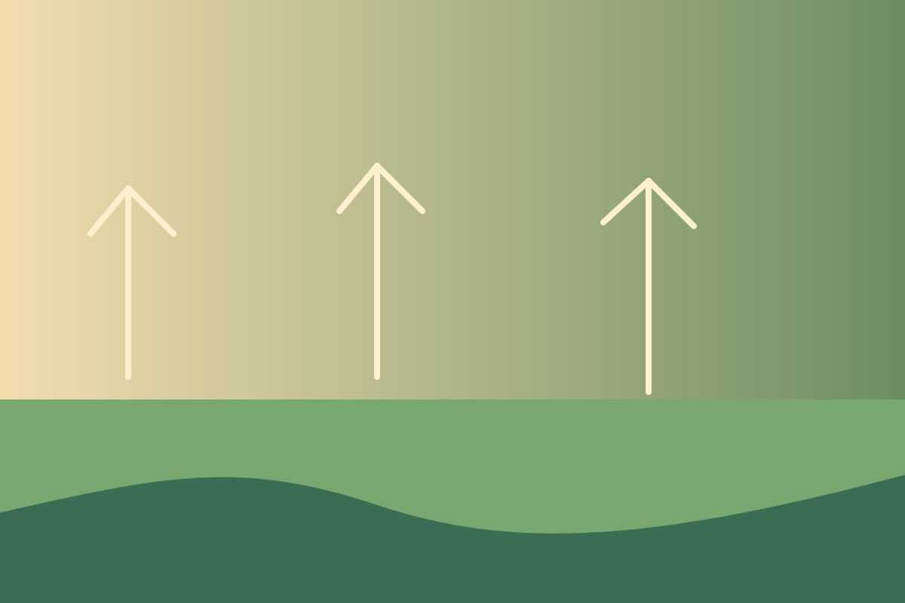

Conservation
Restoring biodiversity through community stewardship
How ward-level community action helps protect habitats and recover degraded landscapes.
Read storyStories
SURUDEV’s stories highlight how conservation, agriculture, climate resilience, and community action are connected in everyday life.

How ward-level community action helps protect habitats and recover degraded landscapes.
Read story
Farmers are rebuilding soil health and strengthening local food systems through better methods.
Read story
Conservation and livelihoods become far more durable when they are shaped by people directly.
Read story
Learning that connects classrooms, families, and local landscapes.
Read story
Adaptation must be local, practical, and grounded in the realities of communities and land.
Read story
Research work helps document the environmental conditions that shape long-term protection.
Read story